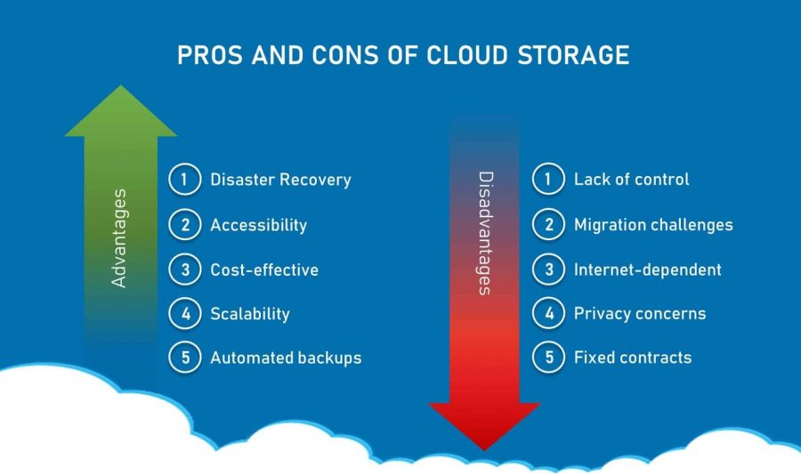

MalignantVSBenign

Tumors can be benign (noncancerous) or malignant (cancerous). Benign tumors tend to grow slowly and do not spread. Malignant tumors can grow rapidly, invade and destroy nearby normal tissues, and spread throughout the body.

Cloud Host

Cloud hosting is the process of outsourcing an organization's computing and storage resources to a service provider that offers its infrastructure services in a utility model
Panda coonect to Mongo DB

flexible and dynamic schema, are a fantastic match for building modern web applications, JSON APIs, data processors, just to name a few. MongoDB has a native Python driver and a team of engineers dedicated to making sure MongoDB and Python work together flawlessly
Pros&Cones

Data distibution & Categorization

Location Shape is used to describe a distribution’s symmetry. As you might expect, symmetric distributions are shaped the same on either side of the center.™.

One of the important steps in any statistical analysis is that of summarizing data. It is good practice to examine both a graphical and a numerical summarization of your data. These summaries are often part of the evidence that researchers use to support any conclusions drawn from the data. They also allow researchers to discover structure that might have otherwise been overlooked in the raw data that was actually collected. Lastly, both graphical and numerical summaries of the data often point to other analyses that may be undertaken with the data.

Shape is used to describe a distribution’s symmetry. As you might expect, symmetric distributions are shaped the same on either side of the center.